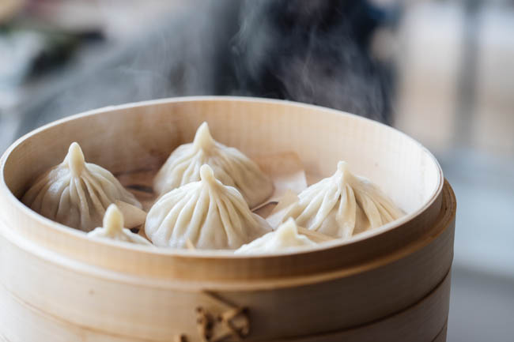

xiaolongbao

Description
Chinese Soup Dumplings, or xiaolongbao (小笼包), are perhaps the most perfect single bite of food ever conceived by man. This tantalizing, dreamy snack is probably the most famous dish to come out of the Jiangnan region of China. It is often associated with the city of Shanghai (the largest city in the region by population, and also the largest city in all of China!), which is why soup dumplings are often called “Shanghai Soup Dumplings.”
If you’ve never tried xiaolongbao and don’t have any authentic Chinese restaurants near you that serve them, we have good news. You can make soup dumplings at home!
Ingredients
- ½ lb pork skin (225g), cut into 1-inch strips
- 1 lb (450g) pork neck bones (you want neck bones that still have meat on them!)
- water
- 2 slices ginger
- 1 scallion, cut into 3 pieces
- 1 tablespoon shaoxing wine
Steps
- The first thing to make is the aspic, or meat gelatin, which will create the soup in the soup dumplings.
- In a mixing bowl, add the flour and warm water 1 tablespoon at a time. Work and knead the dough for 15-20 minutes. The dough should be very soft and smooth. Cover with a cloth and let it rest for 30 minutes.
- Take your ground pork and put it in the food processor. Pulse for 30-60 seconds until the pork resembles paste. In a mixing bowl, add the pork and all the rest of the ingredients except the aspic.
- Lightly dust a clean work surface with flour and roll the dough into a long cylinder/cigar, about an inch in diameter. Cut the dough into small equal pieces weighing about 11 grams each (the dough chunks should be a size resembling that of gnocchi).
- In a metal steamer pot or wok, boil water. If using a wok, put the water at a level so that when you put the bamboo steamer into the wok, the water rises about ½ inch up the bottom of the bamboo base. You never want the water to touch the dumplings inside, though, so make sure not to fill it too high!